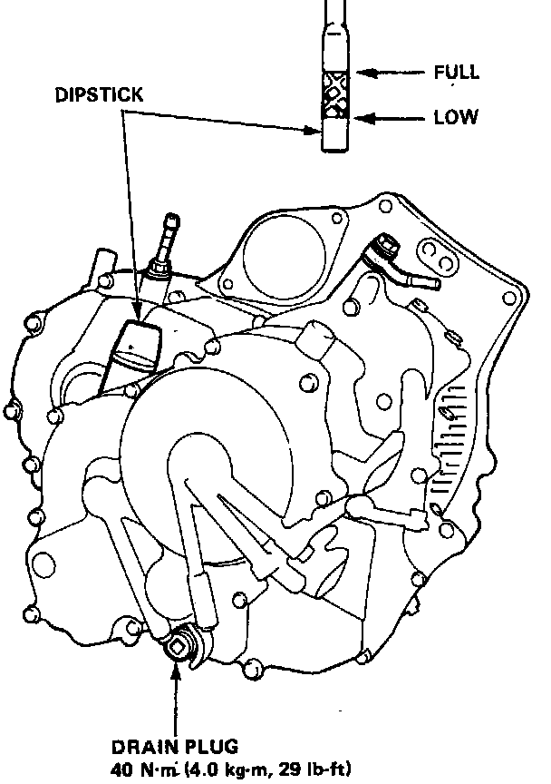

Fluid Level Checking/Changing
Fluid Level Checking/Changing
Checking
With the car on level ground, unscrew the transmission dipstick and check the level of fluid immediately after the engine is shut off (within one minute). The fluid level should be between the full and low marks. Do not screw dipstick in to check the fluid level. If the level is at, or below, the low mark, add DEXRON-type automatic transmission fluid.
Changing
1. Bring the transmission up to operating temperature by driving the car. Park the car on level ground, turn the engine off, then remove drain plug.
2. Reinstall the drain plug with a new washer, then refill the transmission to the full mark on the dipstick.
Automatic transmission Capacity:
At change: 2.4 l (2.5 U.S. qts., 2.1 Imp. qt.)
After overhaul: 5.4 l (5.7 U.S. qts., 4.8 Imp. qt.)